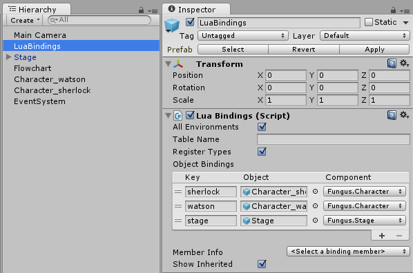

The Fungus module provides several functions for working with the standard Fungus narrative features and flowcharts.
You can control Say and Menu dialogs in much the same way you use Say and Menu commands in a normal Fungus flowchart.
When you use the menu() function, you supply another Lua function to call when that menu option is selected. Make sure to define the function higher up in the file before referencing it in a menu() call. If you don't explicitly set a SayDialog or MenuDialog object to use default ones are created automatically.
Narrative example
This example Lua script demonstrates some of the Say and Menu dialog functions. To try it out, add a Lua object to the scene (Tools > Fungus > Create > Lua) and copy this script into the Lua Script text box. You may also need to add an EventSystem object in the scene (GameObject > UI > Event System) so that the menu buttons will respond to user input.
1 -- Display text in a SayDialog
3 say "This syntax also works for say commands"
5 -- Display a list of options in a MenuDialog
6 -- (Note the curly braces here!)
7 local choice = choose{ "Go left", "Go right" }
11 elseif choice == 2 then
12 say("You chose right")
Note: The curly braces syntax means that the list of options is passed as a single table parameter to the choose() function. It's a shortcut for writing this:
1 local choice = choose( {"Go left", "Go right"} )
Say Dialog functions
To use a custom SayDialog:
- Add as SayDialog to the scene (Tools > Fungus > Create > SayDialog)
- Select the Lua object in the hierarchy and find the LuaBindings component.
- Add a binding to the SayDialog game object, and select the SayDialog component. N.B. Make sure to select the correct component!
- In Lua script, you can now activate this SayDialog using the setsaydialog() function, by passing the key of the SayDialog binding.
To change the behaviour of the say() function, e.g. to not wait for input when done, do this:
1 sayoptions.waitforinput = false
You can bind Character objects in a similar fashion, and set the speaking character using the setcharacter() function.
This is the list of available functions for controlling SayDialogs.
1 -- Options for configuring Say Dialog behaviour
2 sayoptions.clearprevious = true | false
3 sayoptions.waitforinput = true | false
4 sayoptions.fadewhendone = true | false
5 sayoptions.stopvoiceover = true | false
7 -- Set the active saydialog to use with the say function
8 -- saydialog: A binding to a SayDialog component
9 setsaydialog(saydialog)
11 -- Gets the active say dialog, or creates one if none exists yet
14 -- Set the active character on the Say Dialog
15 -- character: A Fungus.Character component
16 -- portrait: The name of a sprite in the character's portrait list
17 setcharacter(character, portrait)
19 -- Write text to the active Say Dialog
20 -- text: A string to write to the say dialog
21 -- voice: A voiceover audioclip to play
Menu Dialog functions
You setup custom MenuDialogs in the same manner as SayDialogs, use the setmenudialog() function to set the active MenuDialog.
The easiest way to display a list of options is using the choose() function. Remember that in Lua array indices start at 1 instead of 0 like in most other languages.
You can set an option to be displayed but not selectable by prepending it with the ~ character.
1 local choice = choose { "Option 1", "Option 2", "~Option 3" }
5 elseif choice == 2 then
8 -- Option 3 is displayed but can't be selected
A useful pattern is to use choose() together with Lua's goto statement and labels. This can be handy for 'flattening out' nested menu options. The goto statement doesn't support jumping into the scope of a local variable, but it's easy to work around this by declaring the local variable in the outer scope. You could also use a global variable (by not using the local keyword).
3 choice = choose { "Option A", "Option B" }
4 if choice == 1 then goto optionA end
5 if choice == 2 then goto optionB end
12 choice = choose { "Option C", "Option D" }
13 if choice == 1 then goto optionC end
14 if choice == 2 then goto optionD end
The menu() and menutimer() functions provide an alternative way to use the MenuDialog. These functions return immediately, and a callback function is called when the player selects an option from the menu.
This is the list of available MenuDialog functions.
1 -- Set the active menudialog to use with the menu function
2 setmenudialog(menudialog)
4 -- Gets the active menu dialog, or creates one if none exists yet
7 -- Display a list of menu options and wait for user to choose one.
8 -- When an option starts with the ~ character it will be displayed but not be selectable.
9 -- Returns the index of the selected option.
10 -- Returns 0 if options list is empty. Note: Lua array indices start at 1, not 0).
11 -- options: an array of option strings. e.g. { "Option 1", "Option 2" }
14 -- Display a list of menu options and wait for user to choose one, or for a timer to expire.
15 -- When an option starts with the ~ character it will be displayed but not be selectable.
16 -- Returns the index of the selected option, or the defaultoption if the timer expires.
17 -- Returns 0 if options list is empty. Note: Lua array indices start at 1, not 0).
18 -- options: an array of option strings. e.g. { "Option 1", "Option 2" }
19 -- duration: Time player has to pick an option.
20 -- defaultoption: Option index to return if the timer expires.
21 choosetimer(options, duration, defaultoption)
23 -- Display a menu button
24 -- text: text to display on the button
25 -- callback: function to call when this option is selected
26 -- interactive (optional): if false, displays the option as disabled
27 menu(text, callback, interactive)
29 -- Display a timer during which the player has to choose an option.
30 -- duration: The length of time to display the timer.
31 -- callback: Function to call if the timer expires before an option is selected.
32 menutimer(duration, callback)
34 -- Clear all currently displayed menu options
Portrait functions
Stage portraits can be controlled by using the stage.
First, add your characters and stage to the LuaBindings list.

Then, in a lua script, use the stage commands show, showPortrait and hide to control the portraits on stage.
1 -- Show a character at this stage position
2 stage.show(character, "left")
4 -- show a character with a specific portrait and move it
5 -- from one stage position to another.
6 stage.show(character, "happy", "offscreen right", "right")
8 -- show a specific portrait
9 stage.showPortrait(character, "amused")
14 -- Hide a character fading out to a position
15 stage.hide(character, "offscreen left")
You can also specify any Portrait option available by using named arguments.
1 stage.show{character=character, fromPosition="left", toPosition="right"}
3 stage.show{character=character, portrait="angry", facing="left"}
5 stage.hide{character=character}
Conversation function
The conversation() function allows you to perform long dialogue exchanges with a single function call. Lua's multiline string syntax [[ ]] is handy here. As the conversation() function takes a single string parameter you can also omit the usual function parentheses.
See the docs for the Conversation system.
Flowchart functions
We've added special functions for say() and menu() because these are so common in Fungus games. To execute any other commands in Fungus from Lua, you must do it in conjunction with a Flowchart & Block, like this:
- Add a Flowchart and a Block (e.g. "MyBlock") in the scene.
- Add the Fungus commands you want to execute from Lua in the Block. (e.g Play Sound)
- Add a Lua object to the scene (Tools > Fungus > Create > Lua)
- In the LuaBindings component, add a binding to the Flowchart gameobject, and select the Flowchart component.
- In the LuaScript component, use the runblock() function to execute the Block, passing the bound flowchart and name of the block as parameters.
1 runblock(flowchart, "MyBlock")
You can also access any Flowchart variable from Lua via the getvar() function.
1 -- Assume the 'flowchart' variable is bound to a Flowchart component in LuaBindings
2 -- MyVar is a string variable defined on the Flowchart
4 local myvar = getvar(flowchart, "MyVar")
8 myvar.value = "New value for string"
This is the list of available functions for controlling Flowcharts.
1 -- Returns the specified Variable in a Flowchart.
2 -- To access the value of the variable, use its .value property. e.g.
3 -- v = getvar(flowchart, "FloatVar")
4 -- v.value = 10 -- Sets the value of the variable to 10
5 -- f = v.value -- f now contains 10
6 -- flowchart: The Fungus Flowchart containing the Block to run.
7 -- varname: The name of the Variable to get.
8 getvar(flowchart, varname)
10 -- Runs the specified Block in a Flowchart
11 -- flowchart: The Fungus Flowchart containing the Block to run.
12 -- blockname: The name of the Block to run.
13 -- commandindex: Index of the command to start execution at
14 -- nowait: If false, will yield until the Block finishes execution. If true will continue immediately.
15 runblock(flowchart, blockname, commandindex, nowait)
 1.8.11
1.8.11